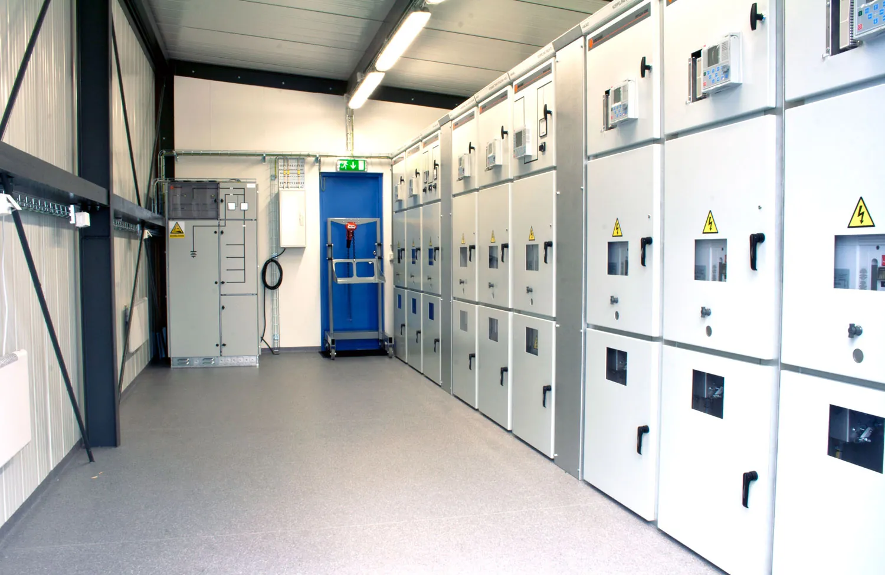
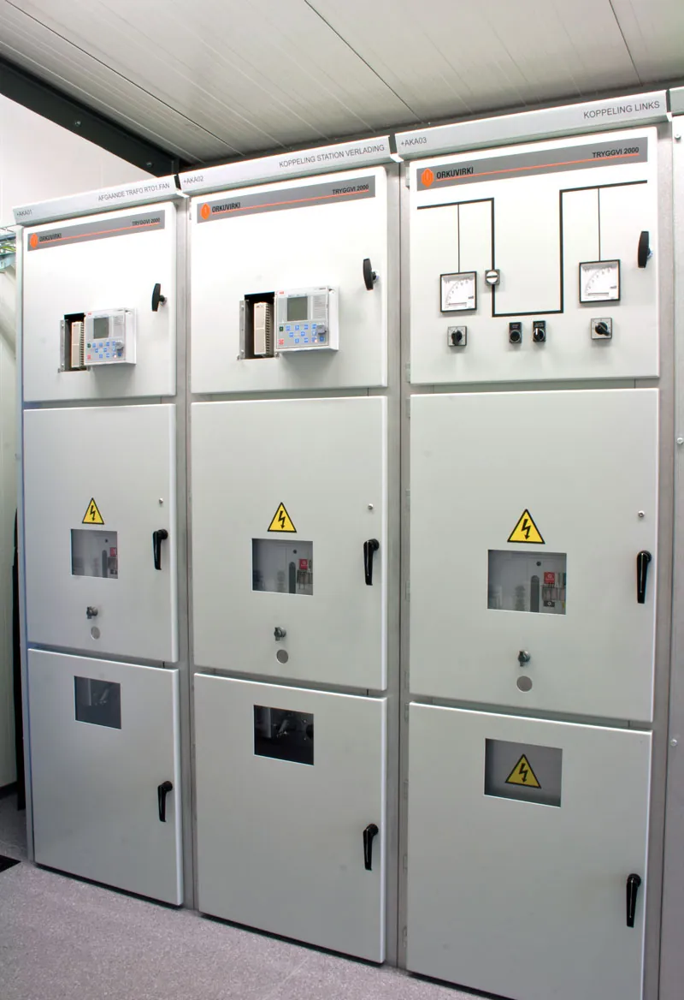
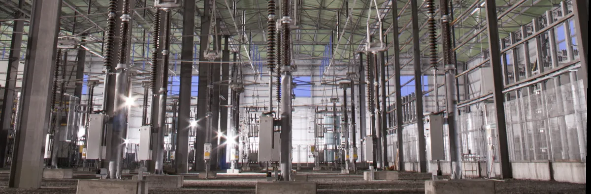

Sagan okkar
Orkuvirki er tækni- og verktakafyrirtæki með vörur og þjónustu fyrir veitur, orkuframleiðendur og iðnað.
Hjá fyrirtækinu starfar fjölbreyttur hópur sérfræðinga; verk- og tæknimenntaðir, iðnaðarmenn og sérhæfðir verkamenn.
Meginstarfsemi Orkuvirkis er í raforkugeiranum og í iðnaði.
Hún hefur einkum falist í hönnun, framleiðslu og uppsetningu rafbúnaðar í orkuver, iðjuver og fyrir veitur
Sérhæfing Orkuvirkis er í
- vinnu við háspennuvirki, útvegun búnaðar, hönnun og uppsetningu ásamt gangsetningarprófunum
- hönnun og framleiðslu á gerðarprófuðum aflrofaskápum fyrir háspennu, 12 kV
- hönnun og framleiðslu á lágspennutöflum (hefur umboð fyrir lágspennubúnað frá töfluframleiðandanum Eaton Holec í Danmörku)
- hönnun og þjónusta við stjórn- og varnarbúnað ásamt samskiptagáttum
- þjónustu og viðhaldi rafbúnaðar

Orkuvirki var stofnað árið 1975 af nokkrum rafverktökum og tæknimönnum á höfuðborgarsvæðinu. Megintilgangur fyrirtækisins var að takast í sameiningu á við verkefni sem voru of stór fyrir einstaka verktaka. Starfsemi fyrirtækisins var ekki samfelld fyrr en 1994. Þangað til voru gerð tilboð í verk sem hentuðu fyrirtækinu og unnin þau tilboð sem fengust.
Árið 1994 varð Orkuvirki að fullu eign Tryggva Þórhallssonar og fjölskyldu hans. Frá 2003 voru eigendur Tryggvi Þórhallsson, Þórhallur Tryggvason og Kristján Guðmundsson og síðan hafa bæst í eigandahópinn Magnús Tryggvason, Stefnir Þ. Kristinsson, Guðmundur Sigvaldason og Tryggvi Þórhallsson.
Eftir um tæplega 50 ára farsælan rekstur skiptist starfsemin í hönnun og eigin framleiðslu á háspennuaflrofaskápum og lágspennudreifitöflum ásamt uppsetningu raforkuvirkja fyrir viðskiptamenn.
Í samstarfi við aðra hefur Orkuvirki einnig tekið að sér verkefni á öðrum sviðum iðnaðar.
Eigin framleiðsla er einkum gerðarprófaðir aflrofaskápar fyrir háspennu, 12 kV. Orkuvirki er umboðsaðili fyrir lágspennubúnað frá töfluframleiðandanum Eaton Holec í Danmörku. Mest hafa verið notaðir töfluskápar af gerðinni Tabula.
Orkuvirki er í hópi reyndustu raftæknifyrirtækja á Íslandi og hefur umtalsverða reynslu á vélasviði. Fyrirtækinu hefur löngum tekist að ná í rétta aðila til samstarfs hverju sinni til hagsbóta fyrir viðskiptamenn um verkefnin sem liggja fyrir.

Vörðurnar okkar
Myndræn saga Orkuvirkis
- 1975Orkuvirki stofnað sem rafverktaka fyrirtæki
- 1992Orkuvirki setur á markað fyrstu kynslóð 12 kV rofaskápa
- 1994Orkuvirki að fullu í eigu Tryggva Þórhallssonar
- 2000Orkuvirki setur á markað aðra kynslóð 12 kV rofaskápa
- 2000Orkuvirki orðið öflugt tækni- og verktaka fyrirtæki
- 2003Orkuvirki í eigu 3 starfsmanna
- 2016Orkuvirki fær ISO 9001 vottun
- 2017Orkuvirki framúrskarandi fyrirtæki 5. árið í röð að mati Creditinfo
- 2020Orkuvirki í eigu 5 starfsmanna
- 2021Orkuvirki fær ISO 14001 og 45001 vottun og er framúrskarandi fyrirtæki að mati Creditinfo
- 2022Orkuvirki fær jafnlaunastaðfestingu
Hafa samband
Vinsamlegast hafðu samband á orkuvirki@orkuvirki.is, við svörum fljótt og vel.